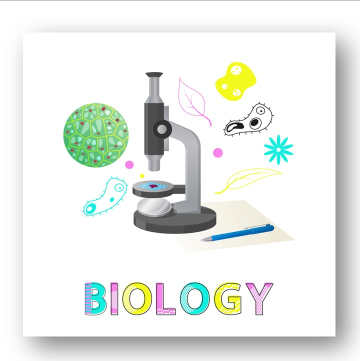
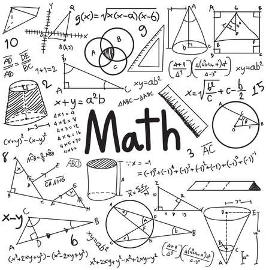
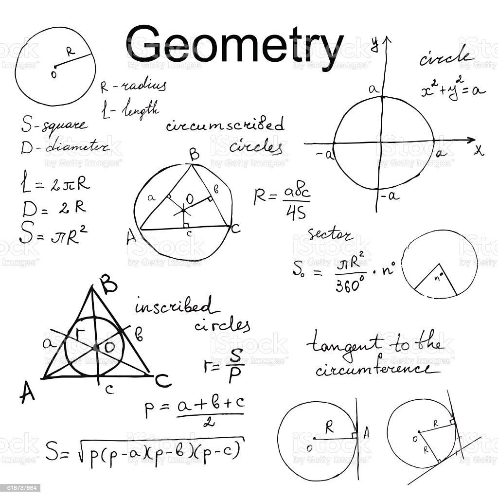
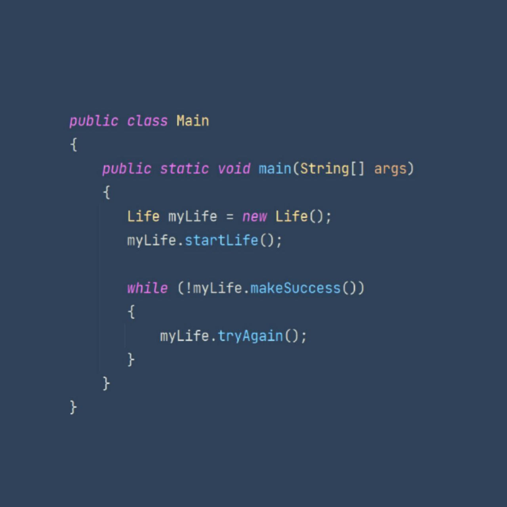
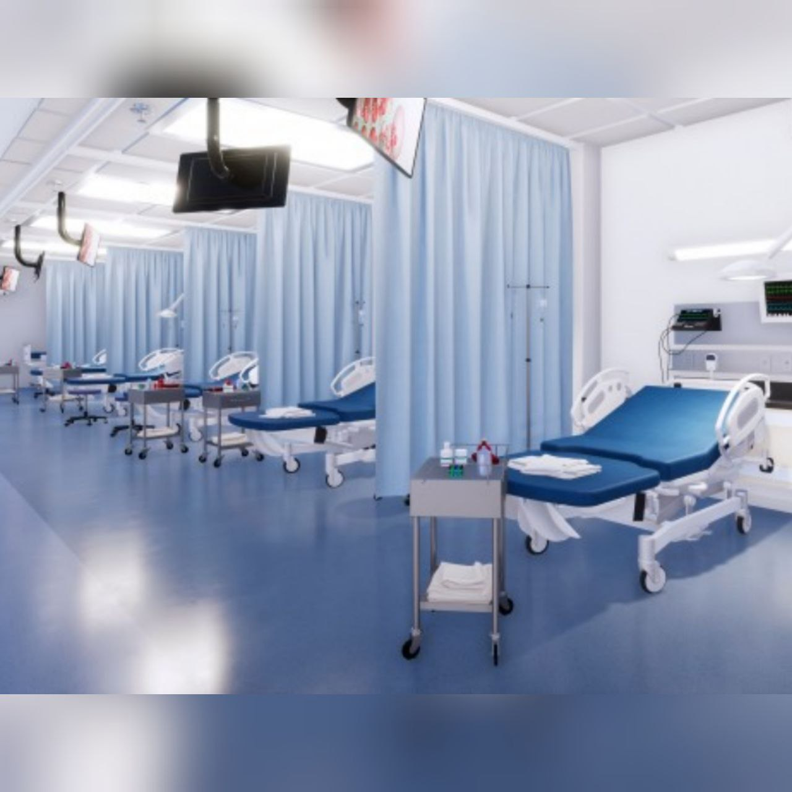
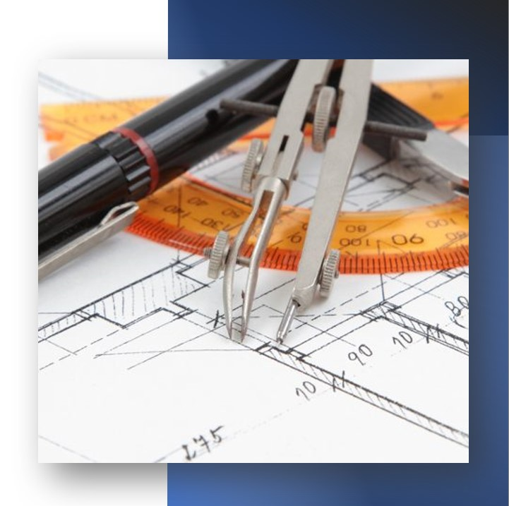
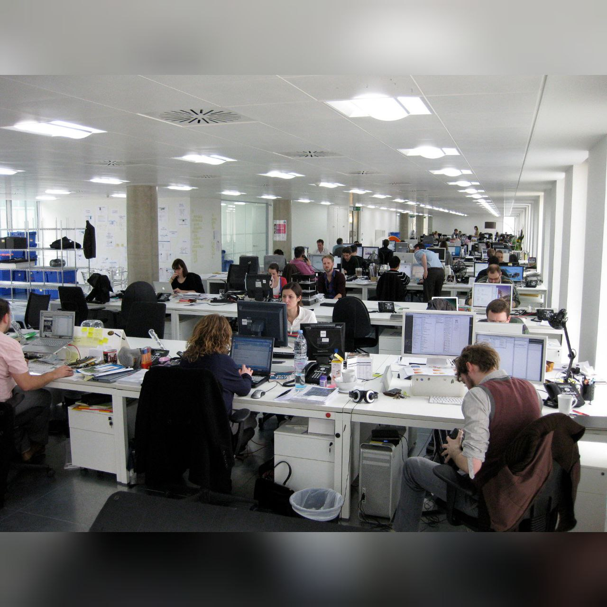
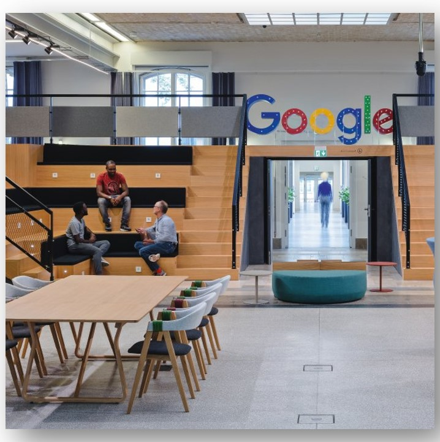
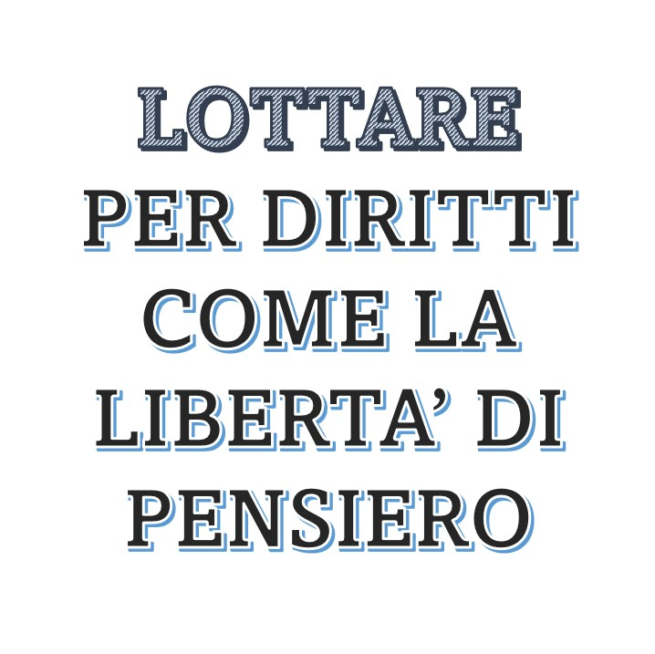
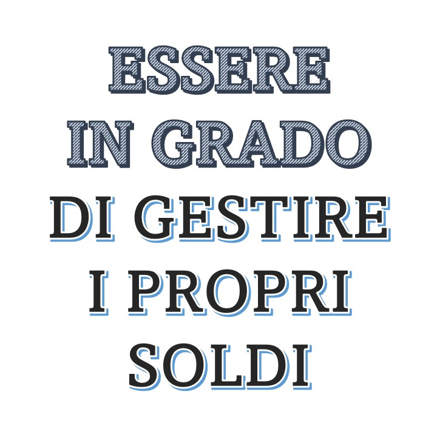

Scopri il tuo futuro!
M
H
W
2
Inizia subito il test!
Quale materia preferisci?





In quale ambiente di lavoro ti vedresti maggiormente?




Quale tra i seguenti valori è quello che più desideri avere nella vita?

